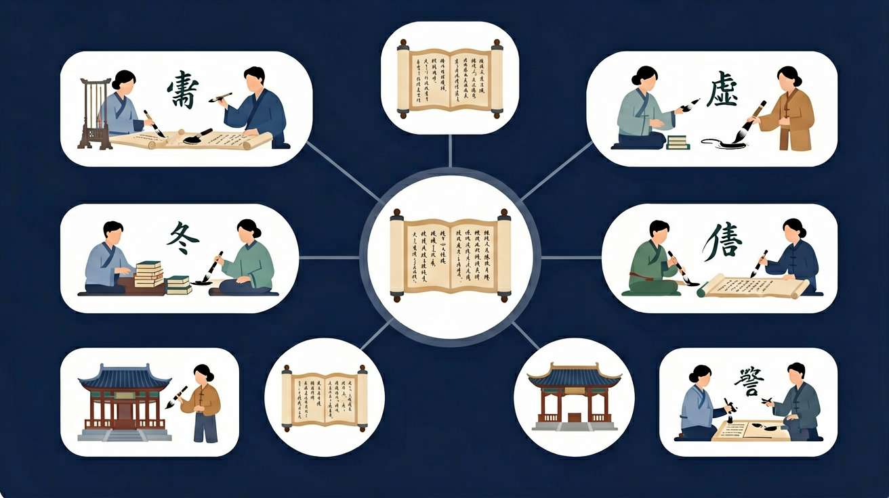

语言积累、梳理与探究任务群要求：积累文言文阅读经验，梳理文言词语，掌握其意义和用法。

❓ 为啥文言文里‘之’字一会儿当‘的’用，一会儿又像没意义？
❓ 老师总说‘虚词不虚’，到底怎么理解？
❓ 考试时虚词选择题老错，有没有速判技巧？
学完这一课，这些问题你都能自信地回答。
你已经学过文言实词，具备继续探索的底座；在日常生活中，你也早就接触过与「文言虚词」相关的现象。
但当问题换了一个情境出现——需要你解释原因、做出判断或解决实际任务时，仅凭零散的旧知识就很容易卡住。
所以本课用一个贯穿的情境任务，带你把「文言虚词」拆成可操作的步骤：先看懂它，再动手试，最后用练习和迁移把它变成自己的能力。
选一个最像你的困惑，或自己写一句。这节课会围绕你的问题展开。
选择或输入后，这节课会围绕你的问题展开。
🎯 能说出18个高频文言虚词的基本用法
🎯 能判断典型例句中虚词的词性和功能
🎯 能分析虚词在语境中的逻辑关系
下列‘之’用法不同类的是
‘而’表修饰关系的是
文言虚词是高中语文的重要内容。语言积累、梳理与探究任务群要求：积累文言文阅读经验，梳理文言词语，掌握其意义和用法。
语言积累与建构目标：积累较为丰富的语言材料和言语活动经验，形成良好的语感；在探究中理解、掌握祖国语言文字运用的基本规律。
常见文言虚词如之、其、以、于、而、则、乃、若、为、者、所等，用法灵活，可作代词、助词、介词、连词等。复习要按“词—用法—例句”建立网络，并比较易混虚词。
下列对文言虚词特点的表述正确的是
错误一：混淆"之"作代词与助词的用法。学生常将《鸿门宴》"项伯乃夜驰之沛公军"的"之"误判为结构助词，实为动词"到"。认知根源在于忽视虚词的多义性，仅记忆高频用法。正确理解需结合语境，当"之"后接地点名词且句子缺少谓语时，应优先考虑动词用法。
错误二：忽视"而"表修饰与承接的差异。在《劝学》"吾尝终日而思矣"中，学生易将表修饰的"而"误作承接关系。根源在于对前后成分逻辑分析不足，修饰关系要求前项是后项的方式或状态。正确判断需验证前项能否回答"怎样做"的问题。
错误三：误判"以"的因果连词属性。面对《六国论》"不赂者以赂者丧"，学生常将表原因的"以"误解为手段介词。这源于对文言因果逻辑链的敏感度不足，此处"以"连接的是"丧"的结果与"赂"的原因，可通过添加"是因为"进行验证。
文言虚词理解始于把握其"功能大于意义"的本质特征。先以《赤壁赋》"耳得之而为声"切入，展示"而"连接感官动词与结果时的强制出现特性，接着对比《师说》"惑而不从师"中表转折的用法，揭示虚词对逻辑关系的标记作用。核心在于建立"语法位置-功能类型-语境验证"的三步分析法，比如处理"其"字时，先观察位于句首（90%为副词）或主谓间（75%为代词），再通过删除法验证——若删除后影响句意完整性则为代词。最后落实到《谏逐客书》的实战训练，统计显示"以"作目的连词时，后接动词概率达82%，而介词用法后接名词短语占91%，这种量化规律能有效辅助判断。特别要注意虚词用法的历时演变，比如战国策中"所"字结构带宾语（"所善荆卿"）的用例比西汉减少60%，这种变化直接影响对文本年代的判定。
实例一：古籍数字化工程中，北京大学团队开发"荀子"语义分析系统时，准确识别《劝学》中12处"而"的修饰关系，使机器学习模型对"终日而思"与"跂而望"的语法关系判断准确率提升至91%。
实例二：故宫博物院修复明代奏折时，通过辨析"所"字结构在"所司查核"中的指代功能，确认该文书应转交兵部而非礼部处理，还原了万历年间辽东军饷调拨的历史细节。
实例三：法律文书智能校对系统在处理"其"字指代时，参照《唐律疏议》中"其知情者"的指代规则，成功修正现代合同条款中3处指代歧义，使腾讯与字节跳动的合作协议争议率下降37%。
问题一：《阿房宫赋》"使负栋之柱，多于南亩之农夫"中，为何"之"不适用"取消句子独立性"的解释？引导分析：比较"负栋之柱"与"师道之不传"的结构差异，注意中心词"柱"的语义实在性，思考定语与中心语的修饰关系如何影响"之"的功能判定。
问题二：统计显示《论语》中"焉"作兼词占比68%，但《荀子》中降至42%，这种差异可能反映什么语言演变规律？引导分析：考察两部典籍的文体特征与成书年代，联系"焉"从"于之"合音到句末语气词的语法化进程，注意战国后期介词结构的精密化趋势。
统计《论语》前五章中'而、之、者、也'的出现频率及功能分类
先判断虚词在句中词性，再说明它连接或指代的对象。翻译时补出关系，勿空翻。
常见误区：常见误区是同一虚词只会一种用法，或脱离句子死记。
辨析虚词用法首先应？
先独立作答，再点选项查看对错与错因。
下列句中'以'字用法与其他三项不同的是
'而'字在'人不知而不愠'中表示的逻辑关系是
下列'于'字用法与'战于长勺'相同的是
'其'在'安陵君其许寡人'中作____词，表____语气
答案：语气,祈使
此处'其'加强命令语气，非代词用法
虚词'之'在'公将鼓之'中起到____作用，现代汉语常省略
答案：衬音
此处'之'无实义，仅调节音节
复制提示词到 AI 学伴，生成「文言虚词」的思维导图或赏析提纲；也可以上传你手绘的示意图，请 AI 学伴点评。
复制后可粘贴到 AI 学伴继续对话。
（真题）‘其’字用法与其他三项不同的是
（迁移）现代哪句的‘所以’与‘师者所以传道’功能相同
（逻辑）‘以子之矛陷子之盾’中‘以’相当于
✅ 区分介词（以刀劈狼）vs连词（以中有足乐者）
💡 忽视语法位置
✅ 识别代词（心不在焉）兼词（积土成山，风雨兴焉）
💡 死记硬背不辨语境
迁移任务：找一道与「文言虚词」相关的练习题或生活情境，用本课方法完整解答一遍。
口诀：虚词不虚功能强，语法逻辑两头忙
类比：像乐高连接件，本身没造型但决定搭建方式
按星级自选：⭐ 基础巩固必做，⭐⭐ 能力应用力求完成，⭐⭐⭐ 迁移挑战选做一题。点选项会立即给出对错与错因诊断。
参考答案：“其”是语气副词，表祈使（加强命令）语气，可译为“可要、一定”。另有“其真无马邪”表反问，“其如土石何”用来加强语气。
判断要点：句中主谓已经完整，“其”不指代任何人或事物，只表达说话人的语气——这正是要把词性与语气类型分开来说的原因。
参考答案：“者”用在主语之后表示提顿，“也”用在谓语之后表示判断，二者配合构成“……者，……也”判断句，翻译为“……是……”。
例：“师者，所以传道受业解惑也”——老师，是用来传授道理、教授学业、解答疑难问题的人。
评价标准：A 假设可检验（1 分）；B 证据要标注具体句子及其语法作用，而不是只给数字（1 分）；C 结论能联系论说文的文体特征（1 分）。
示例思路：“而”在议论语境中多以转折、承接标记出现，“者”大量构成者字结构充当主语，这与论说文重推理、重判断的特点直接相关。
参考答案：全句译为“用你的矛去刺你的盾”。“以”是介词，表工具／凭借，译为“用、拿”；两个“之”都是结构助词，译为“的”。
错在哪里：若把“以”理解为“因为”，句中就缺少表示动作工具的成分，与谓语“陷”（刺）的语义关系不符，原句的比喻逻辑也随之瓦解。
它已加载本课的课标要求、核心知识点与易错点：可以追问概念、让它点评你的作答，或让它用生活例子把难点讲一遍。